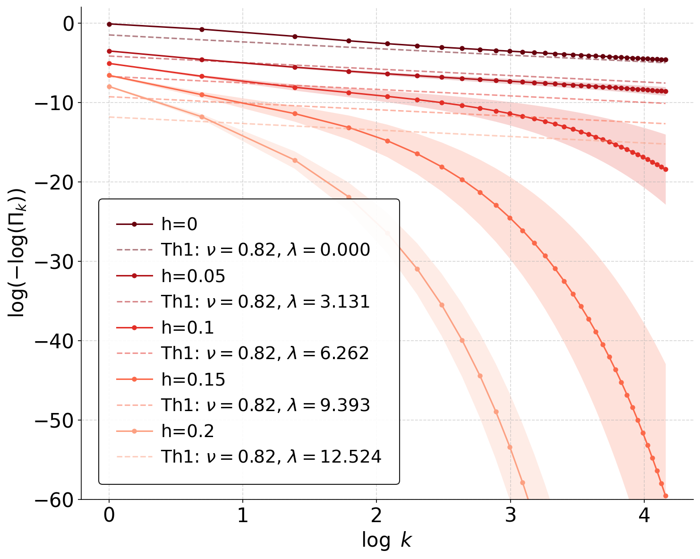

Llama-3-8B-Instruct on AdvBench under GCG-based injection.
TL;DR. Adversarial attacks can reliably steer safety-aligned large language models toward unsafe behavior. Empirically, we find that adversarial prompt-injection attacks can amplify attack success rate from the slow polynomial growth observed without injection to exponential growth with the number of inference-time samples. We first identify a minimal statistical mechanism for these two regimes by giving a small set of assumptions on the distribution of safe generation across contexts under which both scaling laws follow. To explain this phenomenon further, we propose a theoretical generative model of proxy language in terms of a spin-glass system operating in a replica-symmetry-breaking regime, where generations are drawn from the associated Gibbs measure and a subset of low-energy, size-biased clusters is designated unsafe. We analytically show how this model naturally realizes the minimal assumptions. Short injected prompts correspond to a weak magnetic field aligned towards unsafe cluster centers and yield a power-law scaling of attack success rate with the number of inference-time samples, while long injected prompts, i.e., strong magnetic field, yield exponential scaling. We observe qualitatively consistent behavior across a broad range of large language models, spanning parameter scales from 3B to 70B. In particular, the main trends remain stable across multiple attack methods, such as GCG and AutoDAN, as well as across benchmark datasets such as AdvBench and HarmBench.
As the capabilities of AI models continue to advance, highly capable systems may be repurposed for harmful goals, including cybercrime and the development of biological weapons. Frontier large language models are fine-tuned for safety; resulting models are expected to obey benign requests but refuse harmful ones. However, safety-aligned language models remain susceptible to violating this expectation, being jailbroken. One method of jailbreaking is to inject prompts that are deliberately crafted token sequences, such that when included in a model’s input increase the likelihood of evading built-in safety mechanisms. An attacker may further improve the probability of success by drawing multiple inference-time samples, thereby increasing the chance that at least one sampled response violates safety constraints. This motivates a fundamental question: under jailbreaking prompt injection, how does the attack success rate scale as a function of the number of inference-time samples?

The central question is how the attack success rate changes when a model is sampled multiple times at inference time.
Probability of at least one successful unsafe generation among $k$ samples.
Slow scaling with sample count when injection is absent or weak.
Faster scaling when the injected prompt acts as a stronger adversarial bias.
In our experiments (see the figure above), $\log \left(-\log(\Pi_k)\right)$ for GPT-Turbo-4.5 is indeed approximately linear in $\log k$ under attack, however, the corresponding curve for Llama-3.2-3B-Instruct deviates substantially from linearity. This suggests that the polynomial scaling persists under adversarial prompt injection for stronger models such as GPT-Turbo-4.5. By contrast, for weaker models such as Llama-3.2-3B-Instruct, adversarial prompt injection can lead to a much faster decay of the failure probability. More generally we get following two regimes:
The coefficient $\hat\nu$ captures the polynomial component, while $\hat\mu$ captures the exponential correction associated with stronger adversarial alignment.
The experiments evaluate inference-time scaling under no injection, GCG-based prompt injection, and AutoDAN-based prompt injection using LLM-as-a-judge evaluation. Results are reported across Llama and OLMo instruction-tuned models, model sizes from 3B to 70B, and benchmark datasets including AdvBench and HarmBench.
Llama-3-8B-Instruct on AdvBench under GCG-based injection.

Llama-3-8B-Instruct on AdvBench under AutoDAN-based injection.

Llama-3-70B-Instruct on AdvBench under GCG-based injection.

Llama-3-70B-Instruct on AdvBench under AutoDAN-based injection.

OLMo-2-0325-32B-Instruct on AdvBench under GCG-based injection.

OLMo-2-0325-32B-Instruct on AdvBench under AutoDAN-based injection.

OLMo-3.1-32B-Instruct on AdvBench under GCG-based injection.

OLMo-3.1-32B-Instruct on AdvBench under AutoDAN-based injection.
Category-wise analysis compares ASR across harmful prompt categories and attack settings.

Llama-3-8B-Instruct: AdvBench categories, GCG setting.

Llama-3-8B-Instruct: AdvBench categories, AutoDAN setting.

OLMo-2-0325-32B-Instruct: HarmBench categories, GCG setting.

OLMo-2-0325-32B-Instruct: HarmBench categories, AutoDAN setting.
The paper compares refusal-string evaluation to LLM-as-a-judge evaluation and reports that refusal-string checks can overestimate attack success when generations are incoherent, unrelated, or factually incorrect.

Refusal-string-based versus LLM-as-a-judge ASR measurement.

Harmfulness analysis of successful jailbroken responses.

Llama-3-8B-Instruct on AdvBench under AutoDAN: LLM-as-a-judge versus refusal-string ASR.

OLMo-2-0325-32B-Instruct on AdvBench under AutoDAN: LLM-as-a-judge versus refusal-string ASR.
The theoretical story has two layers. A minimal statistical model identifies the assumptions under which the two ASR regimes arise. A spin-glass-based teacher-student model then gives a concrete generative picture: safe and unsafe responses correspond to clusters in a rugged low-energy landscape, and prompt injection acts like an external field that increases mass near unsafe clusters.
The student and teacher measures remain in a related replica-symmetry-breaking phase, leading to power-law behavior over the relevant inference-time range.
The student measure is driven toward an adversarially aligned regime, producing an exponential correction in sample count.

Spin-glass numerical study for the weak-field scaling regime.

Transition behavior when increasing the effective field strength.
Multiple inference-time samples can substantially change the chance of observing at least one unsafe output.
Prompt injection can move ASR from polynomial growth toward a polynomial-exponential crossover.
A spin-glass landscape gives an interpretable model of safe and unsafe response clusters and the role of injection strength.
This repository is a static GitHub Pages site. Replace the placeholder code and arXiv links below after public release.
@misc{halder2026jailbreakscalinglaws,
title = {Jailbreak Scaling Laws for Large Language Models: Polynomial--Exponential Crossover},
author = {Halder, Indranil and Banerjee, Annesya and Pehlevan, Cengiz},
year = {2026},
note = {Preprint}
}